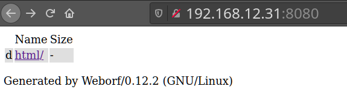

3. Browse to the website
We see on the port 8080 there's a “Weborf” server. Fast and small webserver meant to be run without root privileges.
Let's browse to:
http://192.168.12.31:8080
Output:

Index
 Index
Index